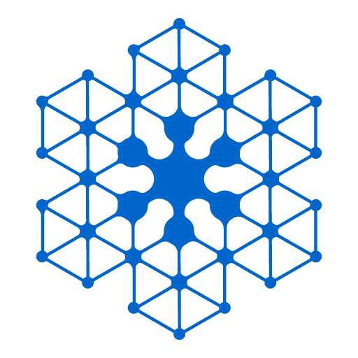

NANOMESH
基于 QUIC/P2P 的去中心化网格
按节点公钥直连 · 同网优先 · 穿透兜底
- 01去中心 P2P节点即身份 · 无中心服务器
- 02同网优先 · 穿透兜底同一网络直连 · 跨网 NAT 打洞
- 03本地身份私钥本地落盘 · 重启复用
从左侧打开会话、实体、群或节点服务

基于 QUIC/P2P 的去中心化网格
按节点公钥直连 · 同网优先 · 穿透兜底
从左侧打开会话、实体、群或节点服务
基于 QUIC/P2P 的去中心化网格
按节点公钥直连 · 同网优先 · 穿透兜底
使用用户名@域名和密码登录家节点